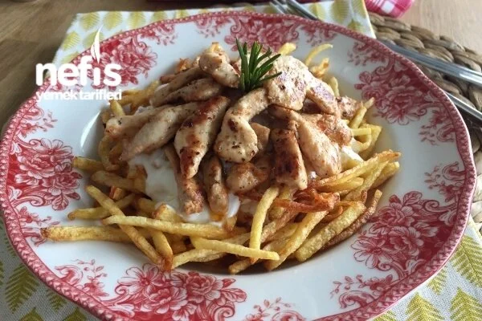
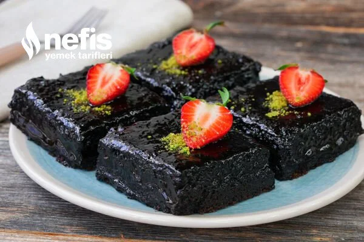
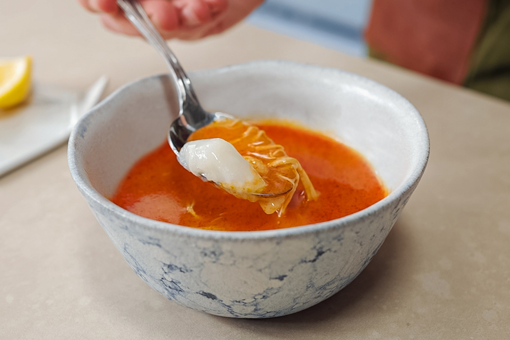

Tavuklu Çökertme Kebabı Tarifi
Malzemeler
Tavuk marinasyon için;
- 500 gram tavuk
- 1/2 (yarım) çay bardağı soya sosu
- 1/2 (yarım) çay bardağı sıvı yağ
- 2 tatlı kaşığı köri
- 1 tatlı kaşığı kırmızı toz biber
Tavuğa sonradan eklenecekler;
- 1 paket krema
- 1 adet kapya biber
Patates için;
- 5 adet orta boy patates
Kızartmak için;
- Sıvı yağ
Ara kat için;
- 500 gram süzme yoğurt
Tavuklu Çökertme Kebabı Tarifi Nasıl Yapılır?
- İlk olarak tavuğu jülyen doğrayıp, marinasyon malzemeleriyle karıştırıp, 1 saat buzdolabında bekletiyoruz.
- O sırada patatesleri kibrit çöpü şeklinde kesip kızartıyoruz.
- Tavayı ısıtıyoruz ve marine ettiğimiz tavuğu ısınan tavaya aktarıp, rengi dönene kadar pişiriyoruz.
- Kapya biberi 3 e bölüp jülyen doğruyoruz ve pişen tavuğa krema ile birlikte ekliyoruz.
- Tavuk sosu çekince altını kapatıyoruz.
- Borcama ilk olarak kibrit patatesleri ekliyoruz.
- Üzerine süzme yoğurdu ekliyoruz.
- Son olarak pişen tavuğu da ekleyip, servis ediyoruz.
Islak Kek Tarifi
Malzemeler
Keki için;
- 5 adet yumurta
- 1 su bardağı şeker
- 1 su bardağı süt (200 ml)
- 1 su bardağı un
- 1 su bardağı sıvı yağ (200 ml)
- 1 paket kabartma tozu
- 1 paket vanilya
- 3 yemek kaşığı kakao
Sosu için:
- 1 su bardağı şeker
- 1 su bardağı süt (200 ml)
- 1/2 (yarım) su bardağı sıvı yağ (100 ml)
- 2 yemek kaşığı kakao
Üzerine;
- Hindistan cevizi veya fıstık
Islak Kek Yapımı Tarifi Nasıl Yapılır?
- Islak kek için öncelikle yumurta ve şekeri uygun bir kaba alarak mikser yardımı ile beyazlaşıp köpük köpük olana kadar5 dakika boyunca çırpalım.
- Ardından sıvı yağ, süt, un, kakao, kabartma tozu ve vanilyayı ekleyerek çırpmaya devam edelim.
- Homojen bir kıvam aldıktan sonra borcamı sıvı yağ ile yağlayalım.
- Kek hamurunu borcama dökelim ve önceden ısıtılmış 180 derece fırında 40 dakika pişirelim.
- Sosu için tüm malzemeleri tencereye koyalım ve güzelce çırpalım.
- Sosumuzu kaynayana kadar sürekli karıştırarak pişirelim. Kaynayınca altını kapatarak bir kenara alalım.
- Pişen ve 5 dakika ilk sıcaklığının çıkması için beklediğimiz keki dilimleyelim.
- Sosumuzu kekin üzerine gezdirelim. Sosu çekmesi için bir kaç saat dinlenmeye bırakalım.
- Dinlenen ve sosunu güzelce çeken kekimizi dilediğimiz şekilde süsleyerek servis edelim. Afiyet olsun!
Arabaşı Çorbası ve Hamuru Tarifi
Malzemeler
Çorbası için:
- Tavuğun herhangi bir parçası (ben kalçalı butla yaptım)
- 1 yemek kaşığı salça
- Pul biber
- 1,5 yemek kaşığı tereyağı
- 2 kaşık un
- 6 su bardağı tavuk suyu veya sıcak su
Hamuru için:
- 1 litre su
- 10 yemek kaşığı un
- Tuz
Arabaşı Çorbası ve Hamuru Nasıl Yapılır?
- Önce hamurumuzu yapalım 3-4 saat beklemesi gerekmekte.
- 3 su bardağı suyu kaynamaya bırakalım. Kalan 3 bardak su ile unumuzu çözdürelim (yani una su ekleyerek karıştıralım).
- Kaynayan suya devamlı karıştırarak yavaş yavaş unu ilave edelim.
- Unun markasına göre değişiyor bazı unlar çok güzel tutuyor bazı unlarda sıkıntı olabiliyor. Kıvamını ayarlarken karıştırdığımız kaşığın zor çevriliyor olması lazım.
- Eğer ununuz az geldiyse ocağın altını iyice kısıp pratik hareketlerle birkaç kaşık unu suda çözdürüp ilave edebilirsiniz.
- Önceden yaptığımda hemen kıvamı tutmuştu ama bu kullandığım unda birkaç kere işlem yapmam gerekti. Ben 20 kaşık un kullandım siz dediğim şekilde ayarlayın.
- Karıştırırken zorlanmaya başlayınca un yeterlidir. Devamlı karıştırarak kaynatın.
- Tepsiyi ıslatın ve hamurumuzu tepsiye yayıp soğuk bir zeminde 3-4 saat bekletin.
- Çorba tarifini de anlatacak olursak tavuğu haşlıyoruz.
- Suyunu fazla koyalım haşlarken çünkü haşladığımız o suyu çorbamızda kullanacağız.
- Haşladığımız tavuk etini didikleyelim.
- Ayrı bir tencerede tereyağında unu kavuruyoruz.
- Yağsız unu kavurup daha sonrada yağ ekleyebilirsiniz.
- Unun kokusu çıktıktan sonra salçayı ve pul biberi ekliyoruz ve karıştırıyoruz.
- Daha sonra tavuk suyumuzu yavaş yavaş ekliyoruz. Devamlı karıştırıyoruz ki topaklanmasın. Eğer topaklanırsa tavuk etini eklemeden önce blenderden geçirebilirsiniz.
- Çorbamız kaynadıktan sonra didiklediğimiz tavuk etlerini ekliyoruz ve pişmeye bırakıyoruz.
- Biraz kaynadıktan kıvam bulduktan sonra ocağımızı kapatıyoruz.
- Hamuruyla birlikte tüketiyoruz.
- Hamuru dilimler halinde kesiyoruz ve kaşığımıza hamurdan alıp çorbadan alıyoruz ve çiğnemeden yutuyoruz. Afiyet olsun.
Yaprak Sarma Tarifi

Malzemeler
- 1 kg asma yaprağı
İç harcı için;
- 1 çay bardağı zeytinyağı (125 ml)
- 3 adet kuru soğan
- 1 adet domates rendesi
- 2 su bardağı pirinç
- 2 yemek kaşığı dolmalık fıstık
- 2 yemek kaşığı kuş üzümü
- 1 yemek kaşığı kuru nane
- 1 tatlı kaşığı yenibahar
- 1 tatlı kaşığı toz şeker
- 1 tatlı kaşığı tuz
- 1 çay kaşığı karabiber
- 1 çay kaşığı tarçın
- 1 avuç maydanoz
- 1,5 su bardağı sıcak su (300 ml)
Üzeri için;
- Yarım limon suyu
- Limon dilimleri
- 2 yemek kaşığı zeytinyağı
- 1 tatlı kaşığı toz şeker
- 2,5 su bardağı sıcak su (500 ml)
Yaprak Sarma Nasıl Yapılır?
- İç harcı için tencereye zeytinyağını alalım. Üzerine doğradığımız soğan, dolmalık fıstık ve kuş üzümünü alarak kavuralım.
- Toz şekeri de ilave edelim ve karıştıralım.
- Fıstıkların rengi dönünce yıkayıp suyunu süzdüğümüz pirinci ekleyelim ve 1-2 dakika daha kavuralım.
- Baharatları ve rendelediğimiz domatesi de ekleyerek sıcak suyu ilave edelim ve suyunu çekinceye kadar pişmeye bırakalım.
- Suyunu çektikten sonra ocaktan alalım ve doğradığımız maydanozu ekleyerek karıştıralım. İç harcımızı soğumaya bırakalım.
- Ardından tezgaha yaprağımızı alalım, iç harcından bir parça yerleştirerek saralım. İç harcımız bitene kadar bu işleme devam edelim.
- Tenceremizin tabanına asma yaprağı yerleştirelim ve sarmalarımızı dizelim.
- Üzerine şeker, zeytinyağı, limon suyu ve limon dilimlerini ekleyelim.
- Suyunu ilave edip üzerini yapraklarla kapatalım ve sarmalarımızı kısık ateşte pişmeye bırakalım.
- Pişen ve soğuyan zeytinyağlı yaprak sarmamız servise hazır. Afiyet olsun.